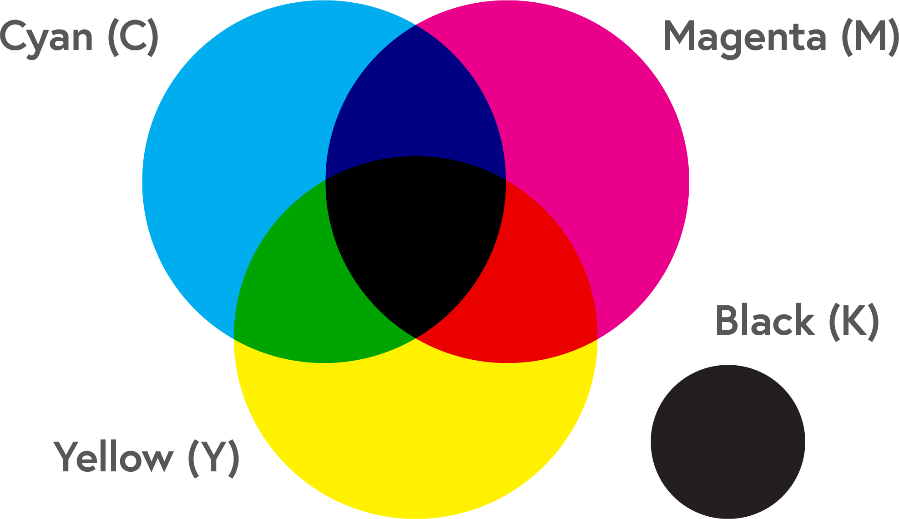

Kleurmodellen
Beeldschermen bestaan uit pixels, dit zijn kleine vierkantjes met een eigen kleur die samen een afbeelding vormen. Deze kleuren worden gemaakt met kleurmodellen daarover lees je hieronder.
RGB
RGB Is een afkorting van de kleuren: Rood, Groen en Blauw. Deze worden vaak gebruikt op beeldschermen van elektronica, denk aan de tv, je laptop of mobiel. Dit kleurmodel gebruikt additieve kleuren, dit houdt in dat de hoofdkleuren samen kunnen mengen om andere kleuren te vormen.
Groen en rood worden bijvoorbeeld geel, rood en blauw worden roze en blauw en groen worden cyaan. Wanneer deze kleuren samen mengen kun je er ten slotte licht aan toe voegen om verschillende tinten te creëren. Wanneer dit licht uitgezet wordt, wordt dit scherm zwart.
CMYK
CMYK Is een afkorting dat staat voor Cyan, Magenta, Yellow en Key (Key Plate, wordt gebruikt voor letters). Dit is een speciaal kleurmodel, omdat het ook zwart gebruikt. Met dit systeem kun je vrijwel elke bestaande kleur maken zonder daarbij licht te gebruiken. Dit is handig als je kleuren wilt maken die niet op een beeldscherm staan. Dit systeem wordt voornamelijk gebruikt bij drukwerk, omdat je daarbij inkt kunt gebruiken, zwart wordt vooral gebruikt om letters te printen.
Het CMYK kleurmodel wordt ook wel full colour genoemd.
PMS
PMS staat voor Pantone Matching System en is gemaakt door een bedrijf genaamd Pantone, dat kleurcoderingen publiceert. Het voordeel van PMS, is dat het niet uit vier kleuren bestaat, maar van te voren al gemengd is. Hierdoor zijn er meer kleurtinten mogelijk die ook kunnen overvloeien. Elke kleur in het PMS systeem heeft een uniek nummer waardoor het makkelijk te vinden is. Verder is het in elk land hetzelfde, waardoor je altijd kan weten welke kleur een buitelandse druk is.
Hieronder zie je de drie belangrijkste kleurmodellen.
